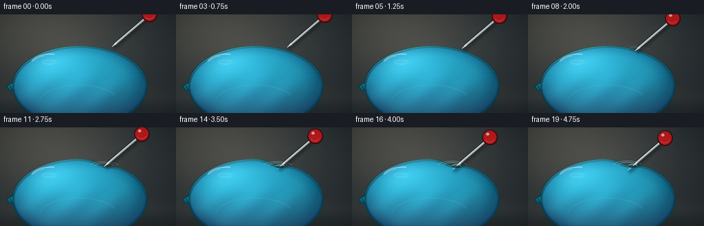
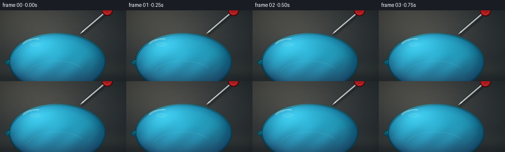

CODING AGENTS AS PIXEL WORLD MODELS
traex/GPT-5.6-Sol · phygen_024
点击播放 · 原生 RGB 像素
逐轮保存的候选
回放视频、检查图与代码变化。
每份候选均可单独播放。实际图片检查记录在下方工具轨迹中。
候选 01播放与检查图
点击播放 · 原生 RGB 像素

展开代码变化
--- 上一保存版本
+++ 本次保存版本
@@ -0,0 +1,230 @@
+from pathlib import Path
+import json, math
+import numpy as np
+from PIL import Image, ImageDraw, ImageFilter
+import artifact_io
+
+ROOT = Path(__file__).resolve().parent
+SPEC = json.loads((ROOT / 'task_spec.json').read_text())
+W, H, N = SPEC['width'], SPEC['height'], SPEC['frames']
+S = 4
+w, h = W*S, H*S
+rng = np.random.default_rng(24017)
+
+# Coordinates at supersampled resolution, expressed in final-pixel units.
+yy, xx = np.mgrid[0:h, 0:w].astype(np.float32)
+X, Y = xx/S, yy/S
+
+def smoothstep(x):
+ x = np.clip(x, 0.0, 1.0)
+ return x*x*(3-2*x)
+
+def rgba_layer(base, rgb, alpha):
+ a = np.clip(alpha, 0, 1)[..., None]
+ return base*(1-a) + np.asarray(rgb, np.float32)*a
+
+def draw_scaled(layer, fn):
+ d = ImageDraw.Draw(layer, 'RGBA')
+ fn(d)
+
+# Dark, softly lit slate/wood background. Fixed texture prevents temporal flicker.
+rad = np.sqrt(((X-105)/180)**2 + ((Y-55)/120)**2)
+base = np.zeros((h,w,3), np.float32)
+base[...,0] = 35 + 30*(1-rad)
+base[...,1] = 42 + 27*(1-rad)
+base[...,2] = 46 + 23*(1-rad)
+# warm upper-left studio glow
+studio = np.exp(-((X-40)**2/(2*85**2)+(Y-5)**2/(2*60**2)))
+base += studio[...,None]*np.array([27,22,15],np.float32)
+# subdued horizontal grain, blurred into a photographic backdrop
+noise_small = rng.normal(0,1.7,(H,H//2+W,3)).astype(np.float32)
+noise_im = Image.fromarray(np.uint8(np.clip(noise_small+128,0,255))).resize((w,h), Image.Resampling.BICUBIC).filter(ImageFilter.GaussianBlur(7*S))
+noise = np.asarray(noise_im).astype(np.float32)-128
+base += noise*0.7
+# tabletop seam / distant highlight
+base += np.exp(-((Y-120)/16)**2)[...,None]*np.array([8,7,5],np.float32)
+base = np.clip(base,0,255)
+
+# Static grounding shadow beneath the heavy water balloon.
+shadow_mask = np.exp(-(((X-116)/91)**2 + ((Y-137)/13)**2)*2.1) * 0.64
+bg = rgba_layer(base, (4,8,9), shadow_mask)
+
+cx, cy, rx, ry = 116.0, 105.0, 97.0, 58.0
+u = np.array([-0.76, 0.65], np.float32) # pin's direction of travel, toward its point
+
+frames=[]
+for fi in range(N):
+ t = fi/(N-1)
+ travel = 24.0*smoothstep(t)
+ tip = np.array([163.0, 47.0],np.float32) + u*travel
+ px, py = map(float,tip)
+
+ # Undeformed upper contour at the moving contact x.
+ qx = np.clip((px-cx)/rx,-.999,.999)
+ bare_at_tip = cy - ry*math.sqrt(max(0.001,1-qx*qx))
+ raw_depth = py-bare_at_tip
+ # Rubber follows the point while being pressed; after puncture it relaxes around the shaft.
+ press = max(0.0, raw_depth)
+ puncture = smoothstep((press-6.2)/3.0)
+ dent_peak = min(press, 7.2)*(1-.30*puncture) + 1.1*puncture
+ dent_width = 14.0 + 3.5*min(1,press/7)
+
+ inside_x = np.abs((X-cx)/rx) < 1
+ root = np.sqrt(np.clip(1-((X-cx)/rx)**2,0,1))
+ top0 = cy-ry*root
+ bottom = cy+ry*root
+ # asymmetric dimple follows diagonal force and has a soft stretched shoulder
+ dent = dent_peak*np.exp(-((X-px)/dent_width)**2)
+ dent += 0.9*min(1,press/5)*np.exp(-((X-(px+10))/28)**2)
+ top = top0+dent
+ balloon = inside_x & (Y>=top) & (Y<=bottom)
+
+ # Antialiased balloon mask from a high-res hard geometry + feathered edge.
+ mask_im = Image.fromarray((balloon*255).astype(np.uint8),'L').filter(ImageFilter.GaussianBlur(0.34*S))
+ mask = np.asarray(mask_im).astype(np.float32)/255
+
+ nx=(X-cx)/rx
+ ny=(Y-cy)/ry
+ rr=nx*nx+ny*ny
+ nz=np.sqrt(np.clip(1-rr,0,1))
+ # Thick translucent cyan latex over a water volume.
+ light=np.clip(-.36*nx-.56*ny+.73*nz,0,1)
+ edge=np.clip((rr-.55)/.45,0,1)
+ water=np.zeros_like(bg)
+ water[...,0]=20+25*light-7*edge
+ water[...,1]=112+67*light-22*edge
+ water[...,2]=139+75*light-16*edge
+ # deep lower water mass and warm floor transmission
+ lower=np.clip((Y-91)/60,0,1)
+ water[...,0]+=15*lower
+ water[...,1]-=24*lower
+ water[...,2]-=19*lower
+ # Internal refracted caustic bands. They remain locked to the water, not the frame.
+ caust=(np.sin((X*0.115)+(Y*0.085)+.7*np.sin(Y*.055))*.5+.5)
+ caust*=np.exp(-((Y-112)/28)**2)*np.exp(-((X-112)/82)**4)
+ water += caust[...,None]*np.array([4,13,15],np.float32)
+ # broad cool reflection from the room
+ broad=np.exp(-((X-74)**2/(2*31**2)+(Y-68)**2/(2*19**2)))
+ water += broad[...,None]*np.array([21,30,30],np.float32)
+ water=np.clip(water,0,255)
+
+ frame=bg.copy()
+ # Slight transparency allows background warmth through at center.
+ alpha=mask*(.91 + .055*edge)
+ frame=frame*(1-alpha[...,None])+water*alpha[...,None]
+
+ # Draw neck and tied knot behind/at the left silhouette.
+ knot = Image.new('RGBA',(w,h),(0,0,0,0))
+ kd=ImageDraw.Draw(knot,'RGBA')
+ pts=[(24,98),(16,99),(8,105),(14,112),(25,111),(31,106)]
+ kd.polygon([(int(a*S),int(b*S)) for a,b in pts], fill=(17,108,130,245), outline=(8,68,84,255), width=2*S)
+ kd.ellipse((15*S,99*S,30*S,113*S), fill=(22,135,154,245), outline=(9,73,89,255), width=2*S)
+ kd.arc((16*S,100*S,28*S,110*S),190,330,fill=(123,220,221,170),width=S)
+ frame=np.asarray(Image.alpha_composite(Image.fromarray(np.uint8(frame),'RGB').convert('RGBA'),knot).convert('RGB')).astype(np.float32)
+
+ # Reapply the body over the inner half of knot for correct attachment layering.
+ body_alpha=alpha[...,None]
+ frame=frame*(1-body_alpha)+water*body_alpha
+
+ # Latex edge: a dark cyan rim plus a hairline highlight on the top-facing arc.
+ m8=np.asarray(mask_im)
+ outer=np.asarray(mask_im.filter(ImageFilter.MaxFilter(3*S//2*2+1))).astype(np.float32)/255
+ inner=np.asarray(mask_im.filter(ImageFilter.MinFilter(3*S//2*2+1))).astype(np.float32)/255
+ rim=np.clip(outer-inner,0,1)*.62
+ frame=rgba_layer(frame,(4,63,79),rim)
+ top_band=np.exp(-((Y-top)/1.25)**2)*inside_x*(Y<cy+3)
+ top_hi=top_band*(.15+.30*np.exp(-((X-76)/49)**2))
+ frame=rgba_layer(frame,(130,232,232),top_hi)
+
+ # Internal tiny air bubble and reflected highlight: useful cues for water and curved latex.
+ overlay=Image.new('RGBA',(w,h),(0,0,0,0)); od=ImageDraw.Draw(overlay,'RGBA')
+ od.ellipse((61*S,66*S,82*S,73*S),fill=(139,226,226,23),outline=(184,244,240,72),width=S)
+ od.arc((43*S,57*S,103*S,93*S),203,282,fill=(224,255,250,115),width=2*S)
+ od.arc((47*S,60*S,94*S,84*S),200,254,fill=(255,255,255,80),width=S)
+ # lower refracted sweep
+ od.arc((55*S,102*S,174*S,159*S),193,333,fill=(90,204,210,38),width=2*S)
+ frame=np.asarray(Image.alpha_composite(Image.fromarray(np.uint8(np.clip(frame,0,255)),'RGB').convert('RGBA'),overlay).convert('RGB')).astype(np.float32)
+
+ # Contact tension rings: subtle arcs around the dimple, growing while pressed.
+ if press>0.25:
+ tension=Image.new('RGBA',(w,h),(0,0,0,0)); td=ImageDraw.Draw(tension,'RGBA')
+ strength=int(35+65*min(1,press/7))
+ for j in range(2):
+ rw=(14+j*7)*S; rh=(5+j*2)*S
+ box=(int(px*S-rw),int((top0[0,int(np.clip(px*S,0,w-1))]+dent_peak)*S-rh),int(px*S+rw),int((top0[0,int(np.clip(px*S,0,w-1))]+dent_peak)*S+rh))
+ td.arc(box,188,348,fill=(151,237,234,max(12,strength-j*18)),width=max(S//2,S))
+ frame=np.asarray(Image.alpha_composite(Image.fromarray(np.uint8(np.clip(frame,0,255)),'RGB').convert('RGBA'),tension).convert('RGB')).astype(np.float32)
+
+ # Pin construction. The whole pin translates along its own axis.
+ head_center=tip-u*72
+ hc=np.array(head_center)
+ shaft_back=hc+u*10.5
+
+ # Locate shaft/membrane crossing by sampling backward from embedded tip.
+ cross=tip.copy(); embedded=False
+ if press>6.2:
+ for s in np.linspace(0,22,90):
+ q=tip-u*s
+ if abs((q[0]-cx)/rx)<1:
+ qtop=cy-ry*math.sqrt(max(0,1-((q[0]-cx)/rx)**2))
+ qtop+=dent_peak*math.exp(-((q[0]-px)/dent_width)**2)
+ else: qtop=cy
+ if q[1] <= qtop:
+ cross=q; embedded=True; break
+
+ # soft contact shadow beneath needle
+ pinshadow=Image.new('RGBA',(w,h),(0,0,0,0)); sd=ImageDraw.Draw(pinshadow,'RGBA')
+ sp1=tuple((shaft_back*S+np.array([2.2,3.0])*S).astype(int)); sp2=tuple((tip*S+np.array([2.2,3.0])*S).astype(int))
+ sd.line((sp1,sp2),fill=(0,15,18,95),width=5*S)
+ pinshadow=pinshadow.filter(ImageFilter.GaussianBlur(2.0*S))
+ frame=np.asarray(Image.alpha_composite(Image.fromarray(np.uint8(np.clip(frame,0,255)),'RGB').convert('RGBA'),pinshadow).convert('RGB')).astype(np.float32)
+
+ pin=Image.new('RGBA',(w,h),(0,0,0,0)); pd=ImageDraw.Draw(pin,'RGBA')
+ def P(v): return tuple(np.round(np.asarray(v)*S).astype(int))
+ outside_end=cross if embedded else tip
+ # shaft edge and center: dark lower edge, polished steel body, sharp white glint
+ pd.line((P(shaft_back),P(outside_end-u*6)),fill=(35,42,47,255),width=5*S)
+ pd.line((P(shaft_back),P(outside_end-u*6)),fill=(164,171,174,255),width=3*S)
+ off=np.array([-u[1],u[0]])*.65
+ pd.line((P(shaft_back+off),P(outside_end-u*6+off)),fill=(242,247,245,225),width=max(1,S))
+ # tapered polished point
+ n=np.array([-u[1],u[0]])
+ cone_base=outside_end-u*8
+ pd.polygon([P(cone_base+n*1.65),P(cone_base-n*1.65),P(outside_end)],fill=(190,198,200,255))
+ pd.line((P(cone_base+n*.55),P(outside_end)),fill=(255,255,250,240),width=max(1,S))
+ # submerged/under-latex point, visibly cyan-tinted
+ if embedded:
+ pd.line((P(cross),P(tip-u*4.5)),fill=(68,116,124,235),width=3*S)
+ ibase=tip-u*6
+ pd.polygon([P(ibase+n*1.35),P(ibase-n*1.35),P(tip)],fill=(105,158,163,230))
+ pd.line((P(ibase+n*.4),P(tip)),fill=(206,236,232,180),width=max(1,S))
+ # glossy red pin head, concentric shading
+ r=11.2
+ pd.ellipse((int((hc[0]-r)*S),int((hc[1]-r)*S),int((hc[0]+r)*S),int((hc[1]+r)*S)),fill=(91,12,16,255),outline=(52,7,10,255),width=S)
+ pd.ellipse((int((hc[0]-r+1.4)*S),int((hc[1]-r+1.0)*S),int((hc[0]+r-1.8)*S),int((hc[1]+r-2.0)*S)),fill=(188,27,31,255))
+ pd.ellipse((int((hc[0]-5.6)*S),int((hc[1]-6.8)*S),int((hc[0]-1.1)*S),int((hc[1]-2.8)*S)),fill=(255,184,164,225))
+ pd.arc((int((hc[0]-8)*S),int((hc[1]-8)*S),int((hc[0]+7)*S),int((hc[1]+7)*S)),30,145,fill=(248,84,70,190),width=S)
+ frame=np.asarray(Image.alpha_composite(Image.fromarray(np.uint8(np.clip(frame,0,255)),'RGB').convert('RGBA'),pin).convert('RGB')).astype(np.float32)
+
+ # Puncture collar lies above the metal: stretched latex closes tightly around the shaft.
+ if puncture>0.03:
+ collar=Image.new('RGBA',(w,h),(0,0,0,0)); cd=ImageDraw.Draw(collar,'RGBA')
+ cp=cross if embedded else tip
+ a=5.0+1.5*puncture; b=2.2+0.4*puncture
+ box=(int((cp[0]-a)*S),int((cp[1]-b)*S),int((cp[0]+a)*S),int((cp[1]+b)*S))
+ cd.arc(box,12,185,fill=(4,56,69,int(220*puncture)),width=max(S,2*S))
+ cd.arc(box,190,354,fill=(155,239,231,int(180*puncture)),width=S)
+ # tiny dark opening only at the very end, not an exaggerated hole
+ rr=.9*S*puncture
+ cd.ellipse((int(cp[0]*S-rr),int(cp[1]*S-rr*.55),int(cp[0]*S+rr),int(cp[1]*S+rr*.55)),fill=(3,43,54,int(180*puncture)))
+ frame=np.asarray(Image.alpha_composite(Image.fromarray(np.uint8(np.clip(frame,0,255)),'RGB').convert('RGBA'),collar).convert('RGB')).astype(np.float32)
+
+ # Extremely subtle cinematic vignette and final downsample.
+ vign=np.clip(((X-W/2)/(W*.73))**2+((Y-H/2)/(H*.78))**2,0,1)*.16
+ frame*=1-vign[...,None]
+ im=Image.fromarray(np.uint8(np.clip(frame,0,255)),'RGB').resize((W,H),Image.Resampling.LANCZOS)
+ frames.append(np.asarray(im,dtype=np.uint8))
+
+frames=np.stack(frames,axis=0)
+artifact_io.save(frames,ROOT)
+print('saved',frames.shape,frames.dtype,'range',frames.min(),frames.max())
候选 02播放与检查图
点击播放 · 原生 RGB 像素


展开代码变化
--- 上一保存版本
+++ 本次保存版本
@@ -156,7 +156,8 @@
frame=np.asarray(Image.alpha_composite(Image.fromarray(np.uint8(np.clip(frame,0,255)),'RGB').convert('RGBA'),tension).convert('RGB')).astype(np.float32)
# Pin construction. The whole pin translates along its own axis.
- head_center=tip-u*72
+ # Keep the recognizable pin head fully in frame throughout the approach.
+ head_center=tip-u*52
hc=np.array(head_center)
shaft_back=hc+u*10.5
候选 03播放与检查图
可观测工具轨迹
实际执行的命令与返回图片。
命令 1exit 0
/bin/bash -lc "cat prompt.txt && printf '\\n--- GENERATION_RULES.md ---\\n' && cat GENERATION_RULES.md"
命令 2exit 0
/bin/bash -lc "cat task_spec.json && printf '\\n--- FILES ---\\n' && find . -maxdepth 2 -type f -printf '%p\\n' | sort && printf '\\n--- BINARIES ---\\n' && command -v ffmpeg || true; command -v blender || true; command -v python3 || true"
命令 3exit 0
/bin/bash -lc 'cat artifact_io.py'
命令 4exit 0
/bin/bash -lc "cat > generate.py <<'PY'
from pathlib import Path
import json, math
import numpy as np
from PIL import Image, ImageDraw, ImageFilter
import artifact_io
ROOT = Path(__file__).resolve().parent
SPEC = json.loads((ROOT / 'task_spec.json').read_text())
W, H, N = SPEC['width'], SPEC['height'], SPEC['frames']
S = 4
w, h = W*S, H*S
rng = np.random.default_rng(24017)
# Coordinates at supersampled resolution, expressed in final-pixel units.
yy, xx = np.mgrid[0:h, 0:w].astype(np.float32)
X, Y = xx/S, yy/S
def smoothstep(x):
x = np.clip(x, 0.0, 1.0)
return x*x*(3-2*x)
def rgba_layer(base, rgb, alpha):
a = np.clip(alpha, 0, 1)[..., None]
return base*(1-a) + np.asarray(rgb, np.float32)*a
def draw_scaled(layer, fn):
d = ImageDraw.Draw(layer, 'RGBA')
fn(d)
# Dark, softly lit slate/wood background. Fixed texture prevents temporal flicker.
rad = np.sqrt(((X-105)/180)**2 + ((Y-55)/120)**2)
base = np.zeros((h,w,3), np.float32)
base[...,0] = 35 + 30*(1-rad)
base[...,1] = 42 + 27*(1-rad)
base[...,2] = 46 + 23*(1-rad)
# warm upper-left studio glow
studio = np.exp(-((X-40)**2/(2*85**2)+(Y-5)**2/(2*60**2)))
base += studio[...,None]*np.array([27,22,15],np.float32)
# subdued horizontal grain, blurred into a photographic backdrop
noise_small = rng.normal(0,1.7,(H,H//2+W,3)).astype(np.float32)
noise_im = Image.fromarray(np.uint8(np.clip(noise_small+128,0,255))).resize((w,h), Image.Resampling.BICUBIC).filter(ImageFilter.GaussianBlur(7*S))
noise = np.asarray(noise_im).astype(np.float32)-128
base += noise*0.7
# tabletop seam / distant highlight
base += np.exp(-((Y-120)/16)**2)[...,None]*np.array([8,7,5],np.float32)
base = np.clip(base,0,255)
# Static grounding shadow beneath the heavy water balloon.
shadow_mask = np.exp(-(((X-116)/91)**2 + ((Y-137)/13)**2)*2.1) * 0.64
bg = rgba_layer(base, (4,8,9), shadow_mask)
cx, cy, rx, ry = 116.0, 105.0, 97.0, 58.0
u = np.array([-0.76, 0.65], np.float32) # pin's direction of travel, toward its point
frames=[]
for fi in range(N):
t = fi/(N-1)
travel = 24.0*smoothstep(t)
tip = np.array([163.0, 47.0],np.float32) + u*travel
px, py = map(float,tip)
# Undeformed upper contour at the moving contact x.
qx = np.clip((px-cx)/rx,-.999,.999)
bare_at_tip = cy - ry*math.sqrt(max(0.001,1-qx*qx))
raw_depth = py-bare_at_tip
# Rubber follows the point while being pressed; after puncture it relaxes around the shaft.
press = max(0.0, raw_depth)
puncture = smoothstep((press-6.2)/3.0)
dent_peak = min(press, 7.2)*(1-.30*puncture) + 1.1*puncture
dent_width = 14.0 + 3.5*min(1,press/7)
inside_x = np.abs((X-cx)/rx) < 1
root = np.sqrt(np.clip(1-((X-cx)/rx)**2,0,1))
top0 = cy-ry*root
bottom = cy+ry*root
# asymmetric dimple follows diagonal force and has a soft stretched shoulder
dent = dent_peak*np.exp(-((X-px)/dent_width)**2)
dent += 0.9*min(1,press/5)*np.exp(-((X-(px+10))/28)**2)
top = top0+dent
balloon = inside_x & (Y>=top) & (Y<=bottom)
# Antialiased balloon mask from a high-res hard geometry + feathered edge.
mask_im = Image.fromarray((balloon*255).astype(np.uint8),'L').filter(ImageFilter.GaussianBlur(0.34*S))
mask = np.asarray(mask_im).astype(np.float32)/255
nx=(X-cx)/rx
ny=(Y-cy)/ry
rr=nx*nx+ny*ny
nz=np.sqrt(np.clip(1-rr,0,1))
# Thick translucent cyan latex over a water volume.
light=np.clip(-.36*nx-.56*ny+.73*nz,0,1)
edge=np.clip((rr-.55)/.45,0,1)
water=np.zeros_like(bg)
water[...,0]=20+25*light-7*edge
water[...,1]=112+67*light-22*edge
water[...,2]=139+75*light-16*edge
# deep lower water mass and warm floor transmission
lower=np.clip((Y-91)/60,0,1)
water[...,0]+=15*lower
water[...,1]-=24*lower
water[...,2]-=19*lower
# Internal refracted caustic bands. They remain locked to the water, not the frame.
caust=(np.sin((X*0.115)+(Y*0.085)+.7*np.sin(Y*.055))*.5+.5)
caust*=np.exp(-((Y-112)/28)**2)*np.exp(-((X-112)/82)**4)
water += caust[...,None]*np.array([4,13,15],np.float32)
# broad cool reflection from the room
broad=np.exp(-((X-74)**2/(2*31**2)+(Y-68)**2/(2*19**2)))
water += broad[...,None]*np.array([21,30,30],np.float32)
water=np.clip(water,0,255)
frame=bg.copy()
# Slight transparency allows background warmth through at center.
alpha=mask*(.91 + .055*edge)
frame=frame*(1-alpha[...,None])+water*alpha[...,None]
# Draw neck and tied knot behind/at the left silhouette.
knot = Image.new('RGBA',(w,h),(0,0,0,0))
kd=ImageDraw.Draw(knot,'RGBA')
pts=[(24,98),(16,99),(8,105),(14,112),(25,111),(31,106)]
kd.polygon([(int(a*S),int(b*S)) for a,b in pts], fill=(17,108,130,245), outline=(8,68,84,255), width=2*S)
kd.ellipse((15*S,99*S,30*S,113*S), fill=(22,135,154,245), outline=(9,73,89,255), width=2*S)
kd.arc((16*S,100*S,28*S,110*S),190,330,fill=(123,220,221,170),width=S)
frame=np.asarray(Image.alpha_composite(Image.fromarray(np.uint8(frame),'RGB').convert('RGBA'),knot).convert('RGB')).astype(np.float32)
# Reapply the body over the inner half of knot for correct attachment layering.
body_alpha=alpha[...,None]
frame=frame*(1-body_alpha)+water*body_alpha
# Latex edge: a dark cyan rim plus a hairline highlight on the top-facing arc.
m8=np.asarray(mask_im)
outer=np.asarray(mask_im.filter(ImageFilter.MaxFilter(3*S//2*2+1))).astype(np.float32)/255
inner=np.asarray(mask_im.filter(ImageFilter.MinFilter(3*S//2*2+1))).astype(np.float32)/255
rim=np.clip(outer-inner,0,1)*.62
frame=rgba_layer(frame,(4,63,79),rim)
top_band=np.exp(-((Y-top)/1.25)**2)*inside_x*(Y<cy+3)
top_hi=top_band*(.15+.30*np.exp(-((X-76)/49)**2))
frame=rgba_layer(frame,(130,232,232),top_hi)
# Internal tiny air bubble and reflected highlight: useful cues for water and curved latex.
overlay=Image.new('RGBA',(w,h),(0,0,0,0)); od=ImageDraw.Draw(overlay,'RGBA')
od.ellipse((61*S,66*S,82*S,73*S),fill=(139,226,226,23),outline=(184,244,240,72),width=S)
od.arc((43*S,57*S,103*S,93*S),203,282,fill=(224,255,250,115),width=2*S)
od.arc((47*S,60*S,94*S,84*S),200,254,fill=(255,255,255,80),width=S)
# lower refracted sweep
od.arc((55*S,102*S,174*S,159*S),193,333,fill=(90,204,210,38),width=2*S)
frame=np.asarray(Image.alpha_composite(Image.fromarray(np.uint8(np.clip(frame,0,255)),'RGB').convert('RGBA'),overlay).convert('RGB')).astype(np.float32)
# Contact tension rings: subtle arcs around the dimple, growing while pressed.
if press>0.25:
tension=Image.new('RGBA',(w,h),(0,0,0,0)); td=ImageDraw.Draw(tension,'RGBA')
strength=int(35+65*min(1,press/7))
for j in range(2):
rw=(14+j*7)*S; rh=(5+j*2)*S
box=(int(px*S-rw),int((top0[0,int(np.clip(px*S,0,w-1))]+dent_peak)*S-rh),int(px*S+rw),int((top0[0,int(np.clip(px*S,0,w-1))]+dent_peak)*S+rh))
td.arc(box,188,348,fill=(151,237,234,max(12,strength-j*18)),width=max(S//2,S))
frame=np.asarray(Image.alpha_composite(Image.fromarray(np.uint8(np.clip(frame,0,255)),'RGB').convert('RGBA'),tension).convert('RGB')).astype(np.float32)
# Pin construction. The whole pin translates along its own axis.
head_center=tip-u*72
hc=np.array(head_center)
shaft_back=hc+u*10.5
# Locate shaft/membrane crossing by sampling backward from embedded tip.
cross=tip.copy(); embedded=False
if press>6.2:
for s in np.linspace(0,22,90):
q=tip-u*s
if abs((q[0]-cx)/rx)<1:
qtop=cy-ry*math.sqrt(max(0,1-((q[0]-cx)/rx)**2))
qtop+=dent_peak*math.exp(-((q[0]-px)/dent_width)**2)
else: qtop=cy
if q[1] <= qtop:
cross=q; embedded=True; break
# soft contact shadow beneath needle
pinshadow=Image.new('RGBA',(w,h),(0,0,0,0)); sd=ImageDraw.Draw(pinshadow,'RGBA')
sp1=tuple((shaft_back*S+np.array([2.2,3.0])*S).astype(int)); sp2=tuple((tip*S+np.array([2.2,3.0])*S).astype(int))
sd.line((sp1,sp2),fill=(0,15,18,95),width=5*S)
pinshadow=pinshadow.filter(ImageFilter.GaussianBlur(2.0*S))
frame=np.asarray(Image.alpha_composite(Image.fromarray(np.uint8(np.clip(frame,0,255)),'RGB').convert('RGBA'),pinshadow).convert('RGB')).astype(np.float32)
pin=Image.new('RGBA',(w,h),(0,0,0,0)); pd=ImageDraw.Draw(pin,'RGBA')
def P(v): return tuple(np.round(np.asarray(v)*S).astype(int))
outside_end=cross if embedded else tip
# shaft edge and center: dark lower edge, polished steel body, sharp white glint
pd.line((P(shaft_back),P(outside_end-u*6)),fill=(35,42,47,255),width=5*S)
pd.line((P(shaft_back),P(outside_end-u*6)),fill=(164,171,174,255),width=3*S)
off=np.array([-u[1],u[0]])*.65
pd.line((P(shaft_back+off),P(outside_end-u*6+off)),fill=(242,247,245,225),width=max(1,S))
# tapered polished point
n=np.array([-u[1],u[0]])
cone_base=outside_end-u*8
pd.polygon([P(cone_base+n*1.65),P(cone_base-n*1.65),P(outside_end)],fill=(190,198,200,255))
pd.line((P(cone_base+n*.55),P(outside_end)),fill=(255,255,250,240),width=max(1,S))
# submerged/under-latex point, visibly cyan-tinted
if embedded:
pd.line((P(cross),P(tip-u*4.5)),fill=(68,116,124,235),width=3*S)
ibase=tip-u*6
pd.polygon([P(ibase+n*1.35),P(ibase-n*1.35),P(tip)],fill=(105,158,163,230))
pd.line((P(ibase+n*.4),P(tip)),fill=(206,236,232,180),width=max(1,S))
# glossy red pin head, concentric shading
r=11.2
pd.ellipse((int((hc[0]-r)*S),int((hc[1]-r)*S),int((hc[0]+r)*S),int((hc[1]+r)*S)),fill=(91,12,16,255),outline=(52,7,10,255),width=S)
pd.ellipse((int((hc[0]-r+1.4)*S),int((hc[1]-r+1.0)*S),int((hc[0]+r-1.8)*S),int((hc[1]+r-2.0)*S)),fill=(188,27,31,255))
pd.ellipse((int((hc[0]-5.6)*S),int((hc[1]-6.8)*S),int((hc[0]-1.1)*S),int((hc[1]-2.8)*S)),fill=(255,184,164,225))
pd.arc((int((hc[0]-8)*S),int((hc[1]-8)*S),int((hc[0]+7)*S),int((hc[1]+7)*S)),30,145,fill=(248,84,70,190),width=S)
frame=np.asarray(Image.alpha_composite(Image.fromarray(np.uint8(np.clip(frame,0,255)),'RGB').convert('RGBA'),pin).convert('RGB')).astype(np.float32)
# Puncture collar lies above the metal: stretched latex closes tightly around the shaft.
if puncture>0.03:
collar=Image.new('RGBA',(w,h),(0,0,0,0)); cd=ImageDraw.Draw(collar,'RGBA')
cp=cross if embedded else tip
a=5.0+1.5*puncture; b=2.2+0.4*puncture
box=(int((cp[0]-a)*S),int((cp[1]-b)*S),int((cp[0]+a)*S),int((cp[1]+b)*S))
cd.arc(box,12,185,fill=(4,56,69,int(220*puncture)),width=max(S,2*S))
cd.arc(box,190,354,fill=(155,239,231,int(180*puncture)),width=S)
# tiny dark opening only at the very end, not an exaggerated hole
rr=.9*S*puncture
cd.ellipse((int(cp[0]*S-rr),int(cp[1]*S-rr*.55),int(cp[0]*S+rr),int(cp[1]*S+rr*.55)),fill=(3,43,54,int(180*puncture)))
frame=np.asarray(Image.alpha_composite(Image.fromarray(np.uint8(np.clip(frame,0,255)),'RGB').convert('RGBA'),collar).convert('RGB')).astype(np.float32)
# Extremely subtle cinematic vignette and final downsample.
vign=np.clip(((X-W/2)/(W*.73))**2+((Y-H/2)/(H*.78))**2,0,1)*.16
frame*=1-vign[...,None]
im=Image.fromarray(np.uint8(np.clip(frame,0,255)),'RGB').resize((W,H),Image.Resampling.LANCZOS)
frames.append(np.asarray(im,dtype=np.uint8))
frames=np.stack(frames,axis=0)
artifact_io.save(frames,ROOT)
print('saved',frames.shape,frames.dtype,'range',frames.min(),frames.max())
PY
python3 generate.py"命令 5exit 0
/bin/bash -lc "python3 - <<'PY'
from pathlib import Path
import numpy as np
from PIL import Image
p=np.load('pixels.npz')['pixels']
ims=np.stack([np.asarray(Image.open(f'frames/{i:02d}.png')) for i in range(20)])
print('pixels.npz',p.shape,p.dtype)
print('frames',ims.shape,ims.dtype)
print('per-frame mean RGB:')
for i,a in enumerate(ims):
print(f'{i:02d}',np.round(a.mean((0,1)),1),'delta',0 if i==0 else np.abs(a.astype(int)-ims[i-1].astype(int)).mean().round(2))
print('all_unique',len({a.tobytes() for a in ims})==20)
print('outputs',[(x.name,x.stat().st_size) for x in map(Path,['pixels.npz','inspection.png','transition_check.png','index.html'])])
PY"命令 6exit 0
/bin/bash -lc 'python3 -m py_compile generate.py artifact_io.py && git status --short 2>/dev/null || true && find frames -type f | wc -l'
命令 7exit 1
/bin/bash -lc "python3 generate.py >/tmp/render.log 2>&1 && tail -n 2 /tmp/render.log && python3 - <<'PY'
import json, numpy as np
from PIL import Image
from pathlib import Path
s=json.loads(Path('task_spec.json').read_text())
a=np.stack([np.asarray(Image.open(f'frames/{i:02d}.png').convert('RGB')) for i in range(s['frames'])])
assert a.shape==(s['frames'],s['height'],s['width'],3]) and a.dtype==np.uint8
z=np.load('pixels.npz')['pixels']
un=((z>>16)&255); gn=((z>>8)&255); bn=z&255
re=np.stack([un,gn,bn],axis=-1).transpose(2,0,1,3).astype(np.uint8)
assert np.array_equal(a,re)
print('validated RGB frames:',a.shape,a.dtype)
print('unique frames:',len({x.tobytes() for x in a}),'motion MAD first-last:',round(np.abs(a[-1].astype(float)-a[0]).mean(),3))
print('deliverables:',', '.join(f'{p.name} ({p.stat().st_size} bytes)' for p in map(Path,['generate.py','pixels.npz','index.html','inspection.png'])))
PY"命令 8exit 1
/bin/bash -lc "mkdir -p .tmp && python3 generate.py >.tmp/render.log 2>&1 && tail -n 2 .tmp/render.log && python3 - <<'PY'
import json, numpy as np
from PIL import Image
from pathlib import Path
s=json.loads(Path('task_spec.json').read_text())
a=np.stack([np.asarray(Image.open(f'frames/{i:02d}.png').convert('RGB')) for i in range(s['frames'])])
assert a.shape==(s['frames'],s['height'],s['width'],3]) and a.dtype==np.uint8
z=np.load('pixels.npz')['pixels']
un=((z>>16)&255); gn=((z>>8)&255); bn=z&255
re=np.stack([un,gn,bn],axis=-1).transpose(2,0,1,3).astype(np.uint8)
assert np.array_equal(a,re)
print('validated RGB frames:',a.shape,a.dtype)
print('unique frames:',len({x.tobytes() for x in a}),'motion MAD first-last:',round(np.abs(a[-1].astype(float)-a[0]).mean(),3))
print('deliverables:',', '.join(f'{p.name} ({p.stat().st_size} bytes)' for p in map(Path,['generate.py','pixels.npz','index.html','inspection.png'])))
PY"命令 9exit 0
/bin/bash -lc "python3 - <<'PY'
import json, numpy as np
from PIL import Image
from pathlib import Path
s=json.loads(Path('task_spec.json').read_text())
a=np.stack([np.asarray(Image.open(f'frames/{i:02d}.png').convert('RGB')) for i in range(s['frames'])])
assert a.shape==(s['frames'],s['height'],s['width'],3) and a.dtype==np.uint8
z=np.load('pixels.npz')['pixels']
un=((z>>16)&255); gn=((z>>8)&255); bn=z&255
re=np.stack([un,gn,bn],axis=-1).transpose(2,0,1,3).astype(np.uint8)
assert np.array_equal(a,re)
print('validated RGB frames:',a.shape,a.dtype)
print('unique frames:',len({x.tobytes() for x in a}),'motion MAD first-last:',round(np.abs(a[-1].astype(float)-a[0]).mean(),3))
print('deliverables:',', '.join(f'{p.name} ({p.stat().st_size} bytes)' for p in map(Path,['generate.py','pixels.npz','index.html','inspection.png'])))
PY"保存候选 3 份；完成命令 9 次；可验证图片返回 0 张。原始 API 响应与完整日志保留在本地。